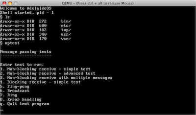

AdelaideOS
AdelaideOS is a small operating system kernel designed for teaching
purposes. It was developed in 2008 for use in the operating
systems course at Adelaide University.

The kernel is around 5,000 lines of code, and has the following features:
- A minimal C library containing printf and several string-manipulation functions
- Dynamic memory allocation (malloc)
- Multitasking and memory protection
- UNIX-style process management using fork, execve, and waitpid
- Interprocess communication using pipes message passing
- A read-only ramdisk-based filesystem
The code is split into nine different versions, each of which builds
on the previous one and adds one or more new features. The purpose of
this arrangement is to
demonstrate how one can start with a very simple kernel and add
features piece by piece. It also permits the kernel to be used as a
teaching aid, whereby each new version of the kernel can be covered in
a week, and at the end of the semester students will have seen how to
construct many of the essential components of a UNIX-like operating
system. A series of accompanying lecture notes explain the full
details of the kernel's operation, and can be used as a study guide by
students while working through a course.
The breakdown of features introduced in each version are as follows:
- Version 1: Displays "Hello world", and illustrates the use of
keyboard & timer interrupt handlers
- Version 2: Introduces a few basic C library functions such as such
as memset, strlen, strcmp, and printf
- Version 3: Initial multitasking support. All processes run in
kernel mode, and have direct acceess to physical memory
- Version 4: Virtual memory and memory protection. All processes run
in user mode and can only access memory mapped into their own private
address space
- Version 5: System calls
- Version 6: malloc implementation using buddy allocation
- Version 7: Support for pipes and I/O redirection via file
descriptors
- Version 8: fork and exec, plus a basic filesystem
- Version 9: Solutions to the two practical exercises: message
passing and POSIX-style filesystem access
The source code for AdelaideOS is in the public domain.
Download
Build instructions are given in the kernel development guide.
The nine different versions are all generated from a common
source. The original source files and scripts used to generate the different versions can
be accessed from the project SVN repository.
For any questions about AdelaideOS, please contact Peter Kelly.

{kind=link}